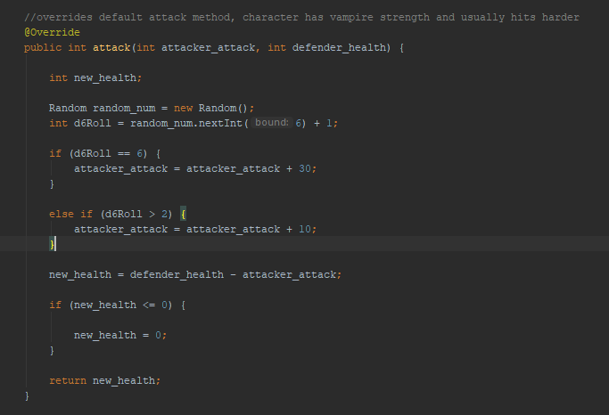
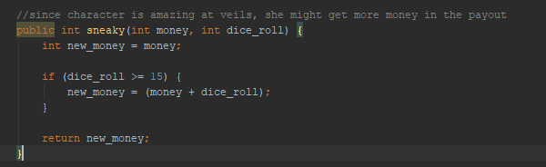

I built this application in Java using swing in Eclipse. It is based on The Dresden Files series of fantasy novels by Jim Butcher. This game was my first experience using Object-Oriented Programming.
This game is a simple fighter vs fighter game. First you choose a character, after a character is chosen, random HP, attack and defence stats are rolled. The user has the option to re-roll the stats by re-selecting the character. Each character has hidden abilities that they can use. The player must fight one of three randomly selected bad guys, that also have their own hidden abilities. If the good-guy character wins the fight, the player wins money that can be used to buy weapons in the store.
The above code sample shows an override method of the generic "attack" method that (along with "defend") all characters in my game, good and bad, start with. By a complete coincidence, I was also learning Dungeons and Dragons for the first time as I was coding this game. As can be seen in the above code sample, I made use of D&D style random number generators, in this specific case, the character has a 4/6 chance of hitting a little harder than normal and a 1/6 chance of hitting A LOT harder. Using different dice for different characters made the game logic a lot more fun. One of my bad guys has no special attack boost, but a 1/20 chance of an instant kill. I also slipped in some fun stuff like the method below
This game was an extensive exercise in the universal object-oriented concepts of inheritance, aggregation, abstraction and polymorphism (which I actually did by accident, since we didn't officially learn the concept until after this project was complete). It was also my first time using visual programming tools, which in this case was the Java JFrame object. This project was the steepest learning curve I faced in learning programming, but I was very happy with my finished product.
The art used in this project is mostly drawn by an extremely talented fan artist who goes by Mika. The characters portrayed do not belong to me, this project was just for my own fun and not commercial in any way. The title "Chicago Fuego" is an incredibly lame reference to the novels that I am confident the books' author would get a kick out of.